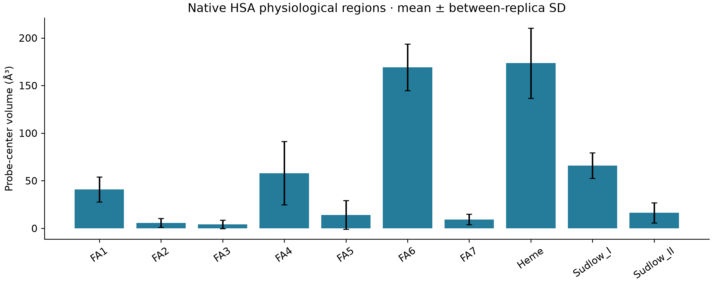
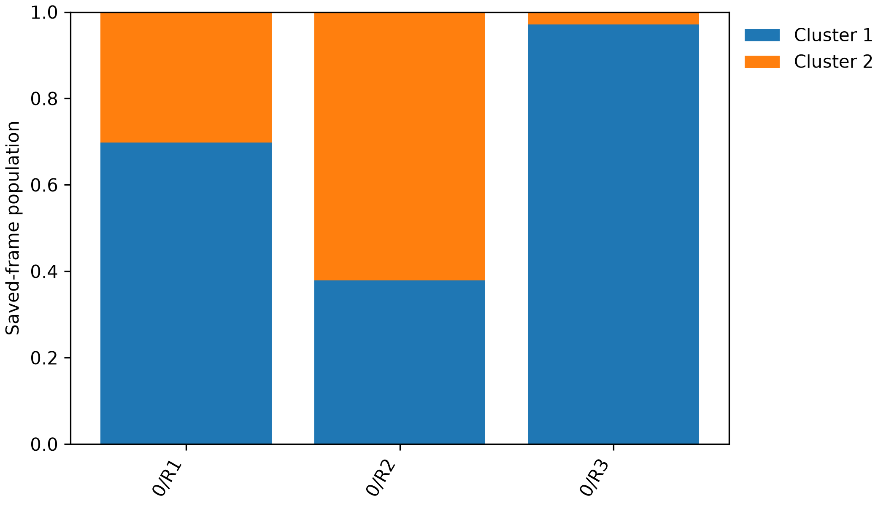
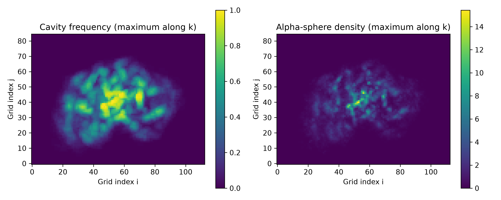
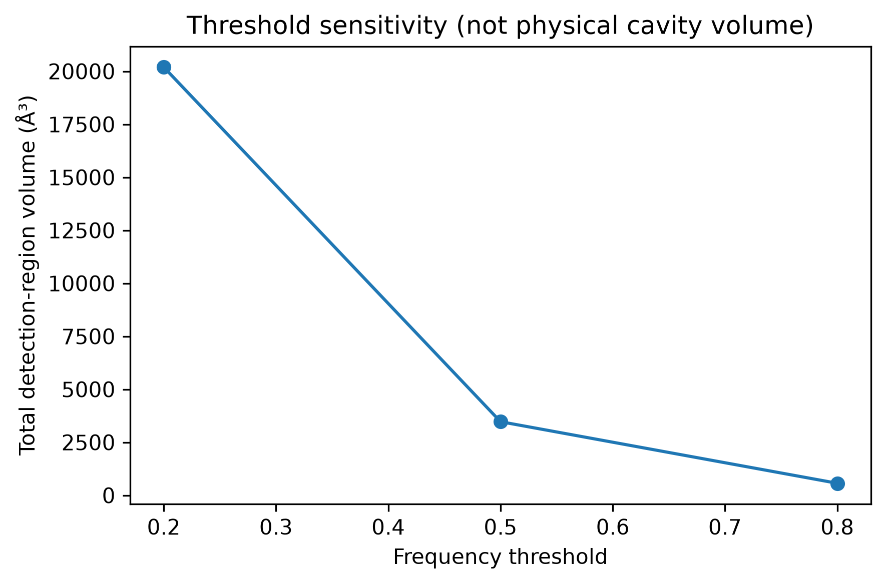

Native HSA · 585 residues · R1–R3
Pocket geometry and detection
Three independent 1 µs trajectories; six observed representative structures and eleven physiological regions per structure.
Full methods and file guide · Volume table · Artifact inventory
Physiological region volumes
Heme: 173.5 ± 36.9 ų; FA6: 169.1 ± 24.5 ų; cleft: 233.5 ± 103.8 ų. Values are mean ± sample SD of three equally weighted replica means (102 sampled frames per replica).

| Region | Mean volume (ų) | Between-replica SD (ų) |
|---|---|---|
| Cleft | 233.5 | 103.8 |
| FA1 | 41.0 | 13.1 |
| FA2 | 5.7 | 4.6 |
| FA3 | 4.2 | 4.4 |
| FA4 | 57.9 | 33.2 |
| FA5 | 14.1 | 15.0 |
| FA6 | 169.1 | 24.5 |
| FA7 | 9.3 | 5.5 |
| Heme | 173.5 | 36.9 |
| Sudlow I | 65.9 | 13.4 |
| Sudlow II | 16.4 | 10.6 |
A 1.4 Å spherical probe and 1 Å grid measure seed-connected free space inside ligand-informed regions. The cleft uses moving landmark-bounded space. Overlapping FA7/Sudlow I and FA3/FA4/Sudlow II regions must not be summed. The reported volume is restricted to the defined ligand region. Zero volumes indicate no selected probe-center voxels under this model and do not establish absence of the physiological pocket.
Structures from actual trajectory frames
| Replica | Cluster | Saved-frame population | Frame | Production (%) | Structure |
|---|---|---|---|---|---|
| R1 | 1 | 69.77% | 4532 | 45.32 | Protein + regions · Protein |
| R2 | 1 | 37.92% | 4648 | 46.48 | Protein + regions · Protein |
| R3 | 1 | 97.17% | 7499 | 74.99 | Protein + regions · Protein |
| R1 | 2 | 30.23% | 7432 | 74.32 | Protein + regions · Protein |
| R2 | 2 | 62.08% | 9134 | 91.34 | Protein + regions · Protein |
| R3 | 2 | 2.83% | 857 | 8.57 | Protein + regions · Protein |

Every combined PDB places the protein and all eleven regions on the same observed frame. OBJ/PLY meshes and individual lining-residue PDBs are in the adjacent region folders. Coordinates are in Å. Empty exports correspond to zero-volume regions.
Frame 1 is 0.1 ns of production. Frame × 0.1 gives production time; Amber absolute time includes 2.2 ns preproduction.
MDpocket detection frequency, density and persistence
The detector sampled 102 frames per replica over 0.1–1000 ns. Its frequency/density outputs and detection-region meshes describe recurrent detections and remain separate from physiological free-space geometry.

R2
Frequency DX · Density DX · NumPy grids
Sampled persistence · Region geometry

R3
DX files are losslessly compressed; decompress before use if the viewer requires .dx. Detection meshes use 0.2, 0.5 and 0.8 frequency thresholds. Their volumes represent detection regions, not physical empty space. Tracks are provisional residue-overlap branches; split/merge edges and gaps are explicit. Spans are sampled observations, not physical pocket lifetimes, affinity or druggability.
Evidence and extraction
Source: the new series_585_apbs native campaign on ciamician, collected 21 October 2026. All 1,662 hashes in the completed source package matched. Twelve production segments passed a read-only artifact audit; each replica contains 585 protein residues, 9,228 protein atoms and 10,000 production frames.
Production artifact audit · Native region transfer · Collection map · Checksums
The source trajectories and reference structures belong to the new 585-residue series. Region definition ancestry is recorded explicitly. Raw trajectories and executable scripts are outside this data bundle.